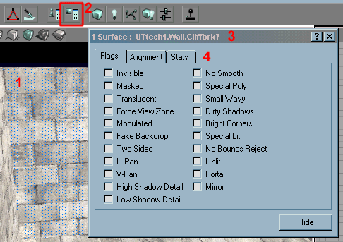

Surface Flags (UT)
Every surface in the Unreal Geometry has a list of flags, which set different types of behaviour. These are accessed in the Flags tab of the Surface Properties window.

|
- a selected surface in a 3D UnrealEd Viewport. See Selecting surfaces for shortcuts and key combinations.
- click this toolbar button to open the Surface Properties window. (alternatives: F5, or through the main menu).
- the title bar displays the number of selected surfaces. The name of the texture applied to those surfaces is displayed (unless several surfaces have different textures).
- the window has three tabs. A UnrealEd bug sometimes makes these sticky. See Surface Alignment for information about the alignment tab.
Basically if you want a condition to apply to your surface you will put a check next to it while your surface is selected. If another surface is selected, the check boxes update to display information about the new selection.
A brush's PolyFlags property can override the flags of all the surfaces associated to it. These can be set manually, or when creating the brush with the Add Special window.
- Invisible
- The texture will be invisible. For example, the surfaces of zone portals and invisible collision hulls are invisible. These surfaces are displayed in UnrealEd unless realtime preview is enabled in the viewport's titlebar.
- Masked
- See color blending. You see masked textures as fences, grates, chains, etc. If a texture has been created as masked, then this flag isn't necessary: the masking effect is "built-in". Some textures however will need this flag to make black parts transparent. Note that if you have a texture that is masked, it will be rendered after everything else. This means that gibs, weapons and players etc, will be rendered even if they are obscured by a masked texture. This has a severe effect on framerate, so go easy on the masked textures!
- Translucent
- See color blending.
- Force View Zone
- Render the poly regardless of its zone mapping. During the zone mapping process, polys will sometimes be flagged as part of Zone 0, causing them to be invisible when the player is within the level. Level designers can detect this class of hole by moving "into geometry" (i.e., outside the level) while viewing the level from an editor window set to "Zone/Portal View." If the hole is replaced by a polygon colored unlike the rest of the polygons in the zone (usually dark gray), the "hole" can usually be patched by setting the PF_ForceViewZone flag. The patch can immediately be verified by moving inside the level.
- Modulated
- See color blending. Some textures are designed specifically to work with this flag: they appear in greyscale in the browser; for instance the water ripple texture HubEffects.WaterRings2. See Making Waterfalls for an example of how to use this.
- Low Translucency
- If you both check translucent and modulated, you will have a low translucency effect
- Fake Backdrop
- Links the texture to the SkyZone actor. When looking into a Fake Backdrop texture you will see what the Skyzone actor sees. Less technical meaning is it is used to create the background SkyBox texture visible in a level. Examples: a window or the ceiling of an outdoor area.
- Two Sided
- The texture will be two sided. Mainly used for sheets and Nonsolid objects. For example, if you have a cube that is non-solid you will see its textures from the outside and it will look like a normal cube. If you move inside of it you won't see the inside walls of the cube. Setting the 2 sided flag on those surfaces will allow you to see the inside walls of the cube. Both sides of the wall (outside and inside) well be the same texture and alignment. There is no way to have a different texture per side.
- U-Pan, V-Pan
- Texture will pan along the u-axis (horizontal) or the v-axis (vertical) respectively. These axes are relative to the texture, so are dependant on how it's been rotated, scaled of skewed. The panning speed is set for the whole zone the surface belongs to in the ZoneInfo actor's TexUPanSpeed and TexVPanSpeed properties. Good for flowing water, clouds in the SkyBox.
- High Shadow Detail
- Makes shadows on the texture more defined with less fuzzy edges by increasing the light map resolution. Also makes the scene a little slower when dynamic lights are present, Like those caused by weapon fire.
- Low Shadow Detail
- Makes shadows less defined and more fuzzy on the edges. Decreases lightmap resolution and speeds up gameplay when dynamic lights are present.
- Ultra Low Shadow Detail
- One of those hidden hacky secret options: if both Low and High Shadow Detail are set then the texture will have Ultra Low Shadow Detail.
- No Smooth
- Turns off all texture filtering and smoothing for the surface.
- Special Poly
- unknown.
- Small Wavy
- Makes the texture move around in circles in a wavy fashion. Often used for water but looks ugly when done this way. This is kinda like Panning except it'll got in all four directions at radom. Good for water in a pool.
- Dirty Shadows
- uses more conservative lighting, supposedly faster, at the expense of looks...
- Bright Corners
- Makes the texture more responsive to light which make the over all texture brighter including the edges and corners. Also helps to illuminate smaller textures that aren't responding to normal lightmapping. If you have a texture that keeps coming out black then try setting this.
This is useful when you have a large surface that is unevenly lit. Enabling this will ensure that all parts are smoothly lit, looking more natural and that there are no dark corners - Special Lit
- Texture will only be illuminated by Light (UT)s that are also set to special lit.
Used when you want a surface to be lit independent of light sources around it. Example a glowing sphere that is not affected by your lighting around it. You need to set up a special light source in this case. - No Bounds Reject
- Poly-specific disabling of bound rejection. Failure of the bound rejection code below causes holes that appear and disappear as you move around the polygon. Flagging the polygon (or in some cases, several adjacent polygons as well) with PF_NoBoundRejection will eliminate this problem. To verify that the polygon in question is suffering from this problem, select all surfaces, then toggle the flag. The missing polygon should appear when "No Bound Rejection" is flagged. This is mainly a band aid fix to what is really causing the problem.
- Unlit
- The surface will not be affected by the lighting process. It will show at full brightness, ie it will show the same in Textured view, in Dynamic Light view and in-game. Useful for textures that look like light sources.
- Portal
- Makes the surface a Zone Portal.
- Mirror
- The surface will look like a mirror. Make sure there is a frame or something as the effect looks very unnatural. Also look out for frame rates.
If you want a surface to have a reflective appearance you would set this flag as well as translucent. This method is used for things like marble floors that mirror the surrounding area but you will also be able to see the texture that is assigned to it.
Related Topics
See Texture Effects (up for a rename, maybe?) for combinations of these.
(Attribute to Slick Willy and T. Sweeney)